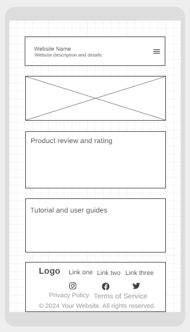
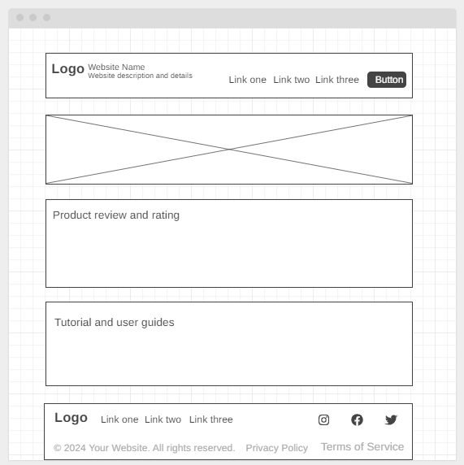

Website Project: Site Plan
Site Name: TimiTech
Reason for the Name: The name "TimiTech" reflects the site's focus on providing knowledgeable and up-to-date information related to technology and gadgets. The word "tech" suggests expertise and understanding, appealing to an audience interested in mastering new technology or staying informed about the latest trends.
Site Purpose: The main purpose of this website is to provide comprehensive resources for technology enthusiasts.
The website will serve multiple functions:
- Gadget Reviews: In-depth reviews of the latest gadgets, highlighting features, pros, cons, and overall performance.
- Tech News: Keeping users updated with the latest tech industry news, product launches, and breakthroughs.
- Buying Guides: Offering buying guides and recommendations based on specific needs, such as budget, preferences, and use cases.
- Product Comparisons: Helping users compare different products based on specifications, features, and user reviews.
- Tech Tutorials: Providing easy-to-follow tutorials on how to use various tech products or solve common tech problems.
Scenario Questions for Target Audience:
Scenario 1
- Question: "I'm a tech enthusiast looking for reviews and comparisons of the latest smartphones to help me choose the best option. How can TimiTech assist me in making an informed decision?"
- Scenario Explanation: This question targets users interested in purchasing gadgets like smartphones, and TimiTech's comparison and review sections can help them make an informed decision.
Scenario 2
- Question: "I just bought a new laptop, but I'm having trouble setting up some of its features. Can TimiTech provide me with easy-to-understand tutorials or troubleshooting guides?"
- Scenario Explanation:This question focuses on users who have already purchased tech products and need assistance. TimiTech’s tutorials section would provide support for users facing technical challenges.
Color Scheme
Color 1: Dark Blue (#2C3E50)
- Usage: Dark blue will be used as the primary background color for the header, footer, and navigation bar. It provides a professional and tech-focused look while ensuring readability and contrast with the content.
Color 2: Light Gray (#ECF0F1)
- Usage: Light gray will be used as the background color for the main content area. This ensures that the text remains legible and allows product images, charts, and other media to stand out without overwhelming the viewer.
Site Plan Using the Color Scheme
Header
- Dark blue background (#2C3E50), with white text for navigation links and the site logo.
- The header will also feature a search bar in light gray for easy access.
Main Content Area
- Light gray background (#ECF0F1), with dark blue headers for each section of the content.
- Reviews, guides, and articles will be in white or off-white for better readability.
Footer
- Dark blue background (#2C3E50) with white text, containing links to the site's privacy policy, terms of service, and contact information.
Font Selection
Font: "Roboto" (Google Font)
Usage
- Header - "Roboto" will be used in bold for the site title, navigation, and section headings to give it a modern, clean appearance. This font's crispness ensures excellent readability and a polished feel.
- Body Text: "Roboto" will be applied in regular weight for article text and descriptions, ensuring clarity and a comfortable reading experience for users.
- Call to Action: For CTA buttons like "Read More" or "Buy Now," a bold version of "Roboto" will be used to make them stand out and grab user attention.
Site Mobile View

Site Desktop View
